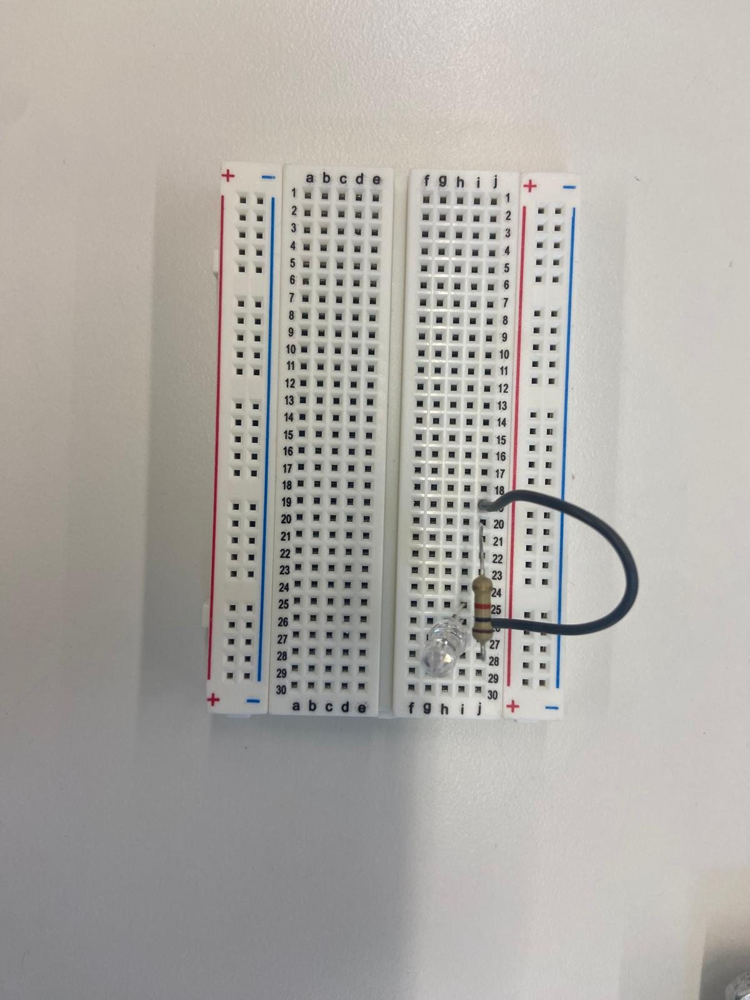
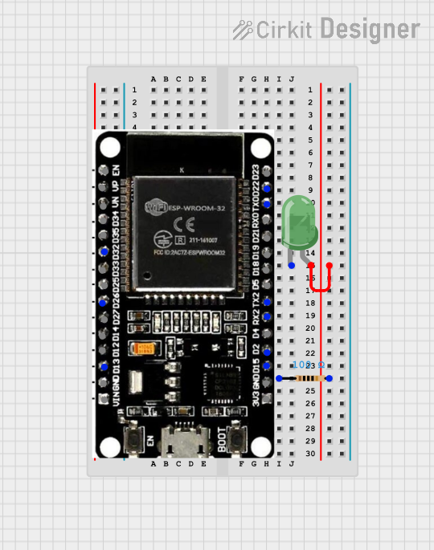
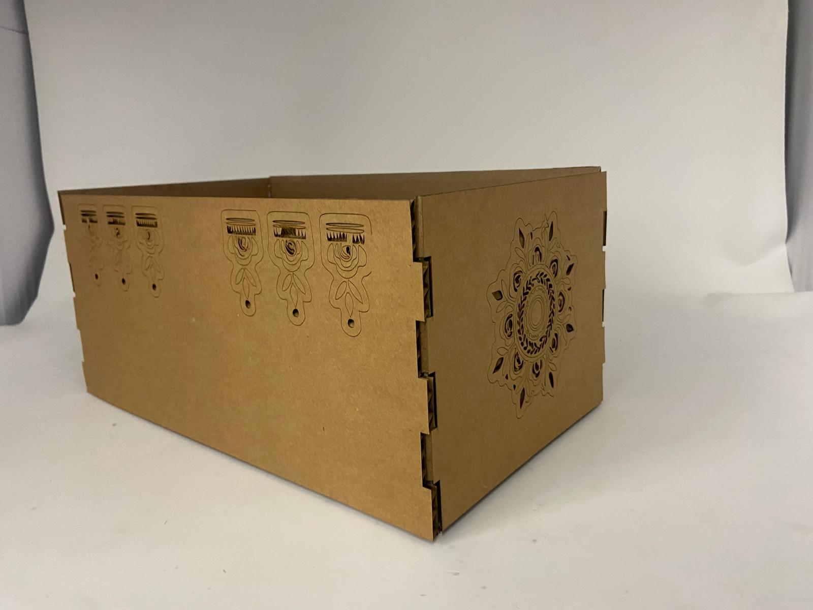
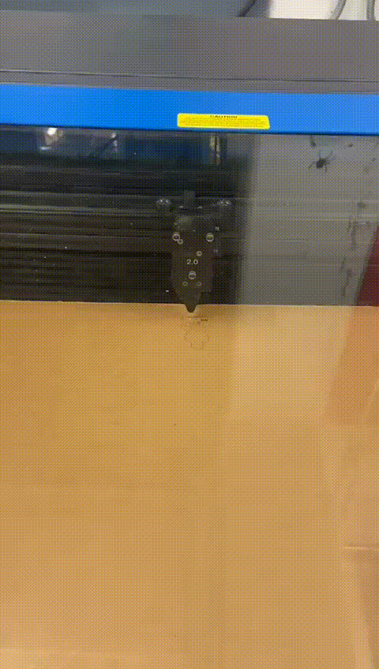
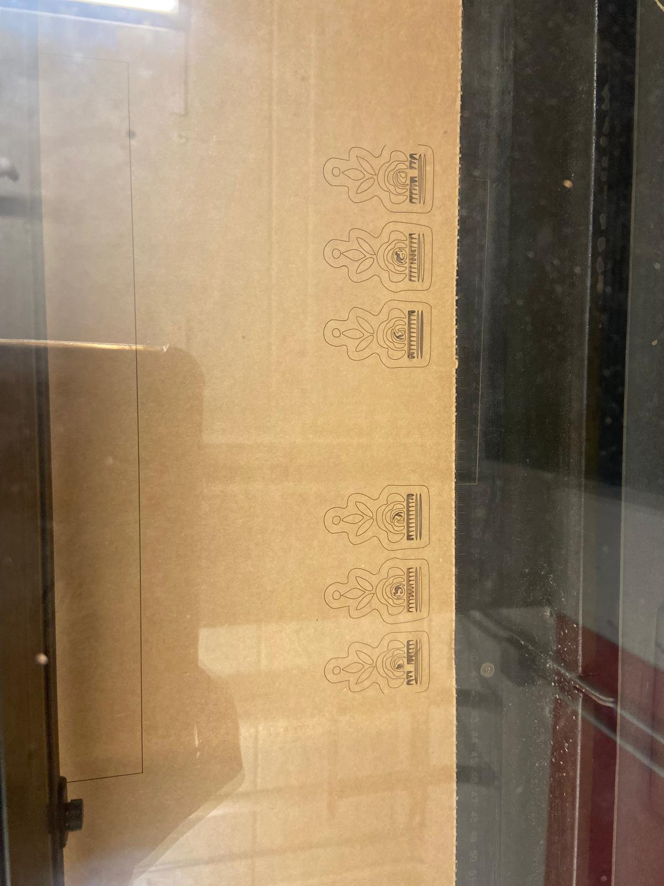

# circuit building
# ---------------------------------
in class, we did a workshop on building circuits. it was really cool to learn how breadboards work - and i can foresee them being extremely helpful in the future! i used the breadboard, an esp32, wire, a 1k resistor, and an led to build a simple circuit to power an led.


i also made a circuit diagram using cirkitdesigner.com of the circuit we built.

# box
# ---------------------------------
for my box, i wanted to keep it simple but have some designs scored on the side. using the lesson from class i created a file for a finger box. i still haven't figured out fully how to use the parameters, so some of my lines were unconstrained and blue. i ended up messing something up along the way, and my entire design fell apart because of this, so i had to redo my design a few times. i found some designs that i found online and converted them to svgs so i could import them into my design. but they were green and it took me a while (and bobby's help) to figure out that this meant it was fixed.

this is the final product!


then, i lasercut my box, and scored the designs onto the side.


# fusion tutorial
# ---------------------------------
for the fusion tutorial, i followed this Beginner Fusion360 Tutorial. it was really helpful in learning more about how to utilise the parametric design function of fusion360. i also learned that you can constrain lines using angles which is very helpful. This is my file below:
# 3d models
# ---------------------------------
the two objects i chose to model were a hex key and a m4x12 screw. using parameters was really helpful, and i think i am getting better at parametric design. it is also really fun to figure out what features on fusion360 i can use to create something. for the hex key, i used sweep to create the main body, and fillet to make the curved part.
to make the screw, i used sweep again, but with the taper angle feature to make the screw head. i also used the thread feature to make the threads on the screw - below is my model.